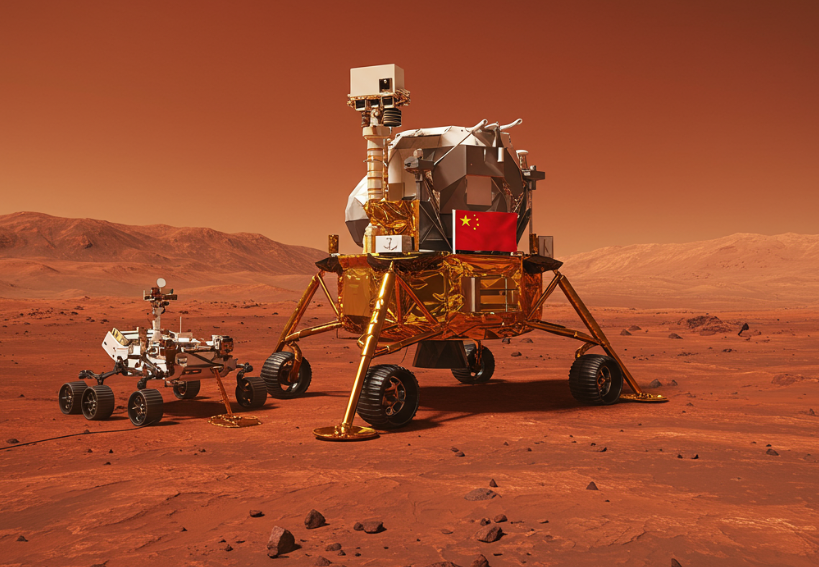

Tianwen-1
Agencia: CNSA (Agencia Espacial China)
Fecha de lanzamiento: 23 de julio de 2020
Duración: Misión activa desde 2021
Tipo de misión: Orbital, aterrizaje y exploración por rover
Objetivo: Estudiar la geología marciana, el clima, el campo magnético y posibles reservorios de agua subterránea.
Carga científica: Radar de penetración, espectrómetros, magnetómetro, cámaras de alta resolución, meteorológicos y multispectrales.
Impacto histórico
Tianwen-1 convirtió a China en el primer país en lograr órbita, aterrizaje y operación de un rover en una sola misión. El rover **Zhurong** operó exitosamente durante más de un año marciano.
Esta misión marcó el ingreso formal de China a la élite de la exploración interplanetaria autónoma.